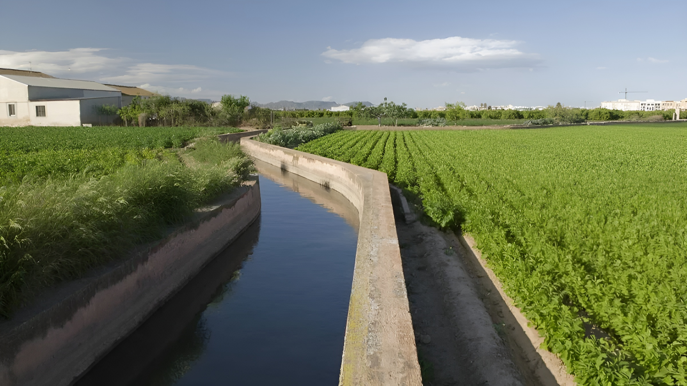

La gestión del agua desempeña un papel crucial en la Huerta de Valencia, una región conocida por su rica tradición agrícola y su valioso patrimonio cultural. A continuación, se detallan algunas razones por las cuales la gestión del agua es de vital importancia en esta área:
- Sostenibilidad agrícola: La Huerta de Valencia es reconocida por sus cultivos de frutas, hortalizas y arroz, que dependen en gran medida del suministro adecuado de agua. Una gestión eficiente del agua garantiza la disponibilidad constante de este recurso vital para mantener la productividad agrícola a largo plazo.
- Preservación del ecosistema: La Huerta de Valencia alberga una gran diversidad de especies vegetales y animales, incluidas aves migratorias y especies autóctonas. La gestión adecuada del agua contribuye a mantener los ecosistemas naturales, los humedales y los espacios verdes asociados con la huerta, asegurando un equilibrio ecológico y protegiendo la biodiversidad.
- Protección del patrimonio cultural: La Huerta de Valencia posee un valioso patrimonio cultural, en particular, las tradicionales infraestructuras hidráulicas que han sido utilizadas durante siglos para el riego de los cultivos. Una gestión adecuada del agua es fundamental para preservar estas estructuras históricas y mantener viva la historia y cultura de la región.
- Adaptación al cambio climático: El cambio climático está generando desafíos adicionales en términos de disponibilidad de agua en la Huerta de Valencia. Las sequías prolongadas y los patrones climáticos cambiantes afectan la cantidad y calidad del agua disponible. Una gestión eficiente del agua ayuda a enfrentar estos desafíos y garantiza la continuidad de la actividad agrícola y la conservación del patrimonio frente a los impactos del cambio climático.
- Uso responsable de los recursos: La gestión eficiente del agua implica utilizar este recurso de manera responsable y sostenible. Esto incluye la implementación de técnicas de riego eficientes, la promoción de prácticas agrícolas sostenibles y la concienciación sobre el uso responsable del agua entre los agricultores y la comunidad en general.
La gestión del agua en la Huerta de Valencia es esencial para garantizar la sostenibilidad agrícola, proteger el valioso patrimonio cultural y natural, adaptarse al cambio climático y promover el uso responsable de los recursos hídricos. Es fundamental implementar soluciones innovadoras y estrategias eficientes para una gestión efectiva del agua y asegurar un futuro sostenible para esta región única.
